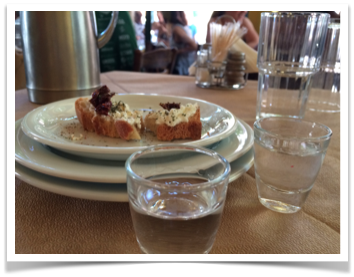

A Week in Northern Greece
Things to do in Thessaloniki, in Litochoro and in Halkidiki
Greece, one of my favorite holidays destinations. Greek holidays can combine culture, hiking and beach all in one trip if you go at the right time, I advise: mid-September. We could only go for a week so we had to pick and choose carefully where we wanted to go. We landed in Thessaloniki where we spent some time discovering the city, we then rented a car to head to Litochoro and do a bit of hiking in search of Zeus :) in the Mount Olympus and finally we drove to Halkidiki for a relaxing time by the sea on the Halkidiki peninsula’s fingers: Kassandra and Sithonia.
A day and a half in Thessaloniki
We landed mid day on a Saturday, After dropping our suitcases at the hotel, we decided to take up the hill to Ano Poli (meaning upper town) and head to Igglis (Ίγγλις) for lunch.
Not being used to the heat, 28 degrees, after a 40min walk I was happy to find out that Igglis had air con :). As the Greek tradition obliged, the below are not shots of water, they are tsikoudia welcoming aperitif.

We ordered the daily specials, the salad was fresh and full of flavours, the plate of chips is a must have and when the Keftedes (Greek meatballs) arrived on our table - I was only thinking about my stomach and I forgot to take a picture :).
As with many restaurants in Greece, no cards are accepted so remember to have cash with you, especially for this one as that there are no cash machines nearby the restaurant.
We walked around Ano Poli after lunch, we climbed up to have a view of Thessaloniki and checked out Agios Pavlos Church (Saint Paul Church).
Best dessert in Thessaloniki: Trigonia from Εlenidis
With the sun hitting quite strongly in the middle of the afternoon, the last thing I wanted to eat was something sweet so I almost passed on this pastry gem from Εlenidis. I was recommended this dessert by my Greek teacher and as soon as I took the first bite, I regretted having ordered the small size. The cream is a delight, so delicious, mixed with the crunchiness of the pastry, this is truly one of the best desserts I have ever eaten. I thought the trigonia was going to be far too sweet but I was wrong, it had just the right amount of sugar.
Thessaloniki seafront night time walk
The city has a very very long seafront that stretches from the port on one side to the Music Hall (Μέγαρο Μουσικής) on the other side. There is also a cycle lane all along so if you don’t feel like walking you can rent a bike very easily. It is a very beautiful and lively walk, you meet lots of talented musicians and when we were there there was some traditional Greek dancing demonstration from different parts of Greece:
Breakfast in Thessaloniki: Estrella (and Greeks likes to have their space)
The next day we went for a brunch at around 11ish at Estrella, it was already fully packed but we only had to wait 15min to get a table. I realised that Greek people like to enjoy their meal without being stuck to strangers, they like to have space around them while sipping on their coffee.
Three unusual episodes occurred when I was there. While I was waiting outside for a table with other 4 people, two gentlemen were seated on a 4 large seater bench table, in London I am pretty sure that the waiter would have sat down two other people next to them if there was a queue outside already.
We were eventually sat at the end of a much bigger table for 12, which was already pretty full. After ordering our breakfast, the waiter brought 4 other people to sit between us and between the other people at the other extremities of the table. They refused and decided to wait longer to have their own table. He then brought up two ladies who accepted reluctantly to sit down and as soon as we left, they took our seats immediately, not to be in the middle anymore.
I believe in London people are unfortunately more used to the proximity of others, in the tube, in the busy streets, in the restaurants which are pretty much always full so in a way they get used to be seated next to strangers and they have less time on their hands to relax and chill so they probably prefer being seated immediately next to some strangers rather than wait even longer. Not to mention that London restaurants try to maximise and squeeze as much profits as they can often to the detriment of the customers’ enjoyment.
A day in Litochoro to hike in Mount Olympus
We drove from Thessaloniki to Litochoro where we spent one night over there.
Litochoro is a small village. As soon as I stepped out of the car, the calmness of the place hit me. It was so peaceful that just being there had the same effect of hundred meditation sessions :). My brain batteries were recharged.
Litochoro is the starting point of plenty of hikes and has a number of very good places to eat.
We asked our host for the best hike as we had only a limited time there and he recommended to drive to Prionia and then he advised us to hike from Prionia down to Agios Dionysios Monastery and then hike back up to Prionia.
Our host was correct, It was a memorable hike in the canyon.
It took us approximately 45 min one way, the path at few points is not very well indicated so if you can grab a map before adventuring yourself, it would be best.
It rained the previous day of our walk and it was muddy in some spots so I would advise to wear hiking boots but this path was still feasible with simple trainers which is what we had.
The
Papanikolaou Guesthouse where we stayed at was perfectly situated in the Litochoro village, we enjoyed our breakfast on the top terrace with stunning views of the mountains. I will come with hiking boots next time and stay longer there.
Halkidiki’s best hotel and restaurant
We ended our trip at the beach in Halkidiki
We wanted to stay in the Sithonia’s peninsula which has the nicest beaches but having booked our trip too late, we failed to find a nice hotel.
We booked consequently a hotel on the Kassandra’s peninsula and decided to drive to discover both peninsula from there. We don’t regret our decision. Kassandra’s nature is beautiful but Sithonia’s one is breathtaking so don’t miss out.
We stayed at
Achtis Hotel which was rated number 5 Hotel in the world in Trip Advisor at the time of booking, not bad for a 4* hotel. The hotel deserves all its stars and more. It has extremely good value for money. Everyone in the hotel was so nice and made us feel so welcome.

On top of the spacious and comfortable rooms, the breakfast to satisfy all tastes, there were a few nice extras to be noted:
-we had an amazing 50min full body massage for 45eur only.
-they change the bed sheets and towels everyday, one can't be more OCD than this.
-a beautiful garden with free roaming peacocks and pond with varied fish species.
The water was so warm in September and my top beaches were:
Kalogria and
Porto Carras.
If you are around the Sithonia’s peninsula, you have to try
Massalia situated in Nea Fokia. Massalia is located on a picturesque village square with a beautiful church. Great dining experience from start to finish. Great service by a waiter who despite the busyness of the place succeeded to be genuinely attentive, sociable and caring.
I've come back to London now and finishing writing this article makes me feel like booking my next holidays to Greece next year already :).